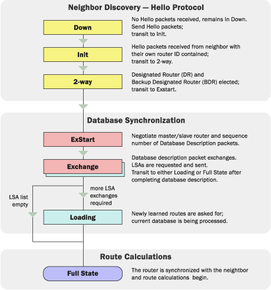

Принцип на работа на OSPF протокола
- Установява съседства (neighbor adjacencies). Всеки рутер от даден мрежов сегмент установява съседство с останалите;
- При мрежови топологии като Ethernet, избира се един рутер, който е Designated (DR) и един който да е Backup Designated (BDR);
- След като са избрани DR и BDR, рутерите изчисляват и синхронизират своите LSDB (Link State Database), което е база данни с информация за цялата топология, известна на рутера. Съответно, всички рутери в една област (Area) имат еднакви LSDB;
- Чрез периодични "hello" пакети, които се изпращат към мултикаст адрес 224.0.0.5 (който препраща данните към всички останали рутери), Designated Router-a проверява състоянието на връзката в съответния мрежов сегмент. При евентуален срив, той уведомява останалите, че маршрутът е невалиден.
Това са условията за установяване на съседства между рутери:
- Идентификационния номер на областта (Area ID) трябва да съвпада. Така например, не може да бъде установено съседство между рутер, конфигуриран в Area0 и такъв, конфигуриран в Area1 за една и съща мрежа. В допълнение, рутерите трябва да са в една и съща подмрежа (subnet);
- Паролата за автентикация между два рутера в един мрежови участък трябва да съвпада;
- OSPF обменя периодични "hello" пакети във всеки мрежов сегмент. Те се използват за keep-alive механизъм, който спомага за това рутерите да проверяват дали техните съседи отговарят. Ако рутер не получи "hello" отговор след определено време (Dead Interval), той смята, че съседът го няма и обявява маршрута за невалиден. За да се установи съседство между два рутера, техните интервали за пращане на "hello" пакети и за обявяване на маршрути за невалидни трябва да са еднакви.
Процесът по установяване на съседства (neighbor adjacencies) в OSPF протича в следната последователност:
- Down State. При това състояние рутерът все още не е получил "hello" пакет и продължава да изпраща такива, докато не получи отговор;
- Init State. Рутерът преминава в това състояние, когато получи първия "hello" пакет от свой съсед. Ако в приетия "hello" пакет той види своето Router ID, преминава в 2-way state;
- 2-way State. При това състояние между рутерите е установена двупосочна връзка и всяка страна е изпратила и получила в отговор "hello" пакет. Това е моментът, в който рутерите решават дали да установят съседство. Също при Multiaccess Broadcast мрежови архитектури като Ethernet се избира Designated Router и Backup Designated Router;
- ExStart. След избора на DR и BDR се установяват master - slave отношенията между рутерите. Рутерът с по-голямо Router ID става master и започва обмена на машрутна информация;
- Exchange. В състояние "Exchange" рутерите обменят DBD (Database Descriptor Packets, пакети за описание на базата данни), които съдържат актуалната информация за топологията. Всеки DBD пакет има пореден номер, който се инкреметира само от master-a и се потвърждава от slave-a. Съдържанието на получения DBD се сравнява с LSDB-то на локалния рутер;
- Loading. Рутерите изграждат мрежовата топология спрямо информацията от DBD-тата. При несъответствия в нея, те изпращат запитвания (Link State Request, заявка за състоянието на връзката) относно липсващ маршрут и получават отговори (Link State Update). Всички отговори за състоянието на връзката се потвърждават;
- Full. В това състояние рутерите имат напълно синхронизирани топологии и установени пълни съседства. Това е нормалното състояние на рутерите при правилно конфигуриран OSPF процес (освен в Broadcast мрежите, където може и да са в 2-way state).
При избора на Designated Router & Backup Designated Router в Multiaccess Broadcast мрежи като Ethernet са в сила следните условия:
- Рутер с най-висок приоритет на OSPF процес трябва да бъде избран за DR, като по подразбиране всички рутери имат приоритет 1;
- Ако приоритетите съвпадат, рутерът с най-голямо Router ID се избира за DR;
- Ако не е изрично настроен, за Router ID се взема най-големият IP адрес от Loopback. В случай че такъв не е конфигуриран, взема се най-големият IP адрес от активните интерфейси на рутера.
- За BDR се избира следващият рутер, който отговаря на първите три условия.
Въпреки че процесът по избиране на DR и BDR е автоматизиран, препоръчва се да се настроят ръчно приоритети или Router ID-та.
Една от причините да се налага да се избират DR и BDR е да се намали служебният трафик в мрежата. При Broadcast мрежите, всеки рутер установява Full State с DR и BDR. С всички останали той е в 2-way state, тъй като не обменя с тях маршрути. Всички обикновени рутери пращат обновления към мултикаст адрес 224.0.0.6 (който препраща информацията към DR и BDR) и съответно DR връща ъпдейти към мултикаст адреса 224.0.0.5 (който препраща информацията към всички останали рутери). Така не се налага всички рутери да обменят информация помежду си относно маршрутите и се спестява значително количество служебен трафик. Работата на BDR е периодично да проверява дали DR отговаря и ако не получи отговор, той поема ролята на DR.
Определянето на DR и BDR има смисъл единствено в Multiaccess Broadcast мрежи като Ethernet, тъй като при Point-to-Point даден рутер може да се свързва само с още един друг.